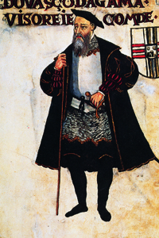
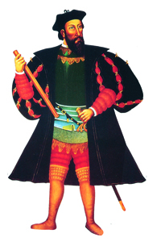

Lezione 10  Le Scoperte Geografiche
Le Scoperte Geografiche

-
240
620
-
265
645
-
180
280
-
335
545
-
190
470
-
300
645
-
165
450

VASCO DA GAMA
Il portoghese Vasco da Gama sbarca sulle coste di Malabar nel 1498, aprendo la via al monopolio del Portogallo sul commercio di spezie con le Indie. Nominato viceré delle Indie, è qui raffigurato nel cosiddetto Libro di Lisuarte de Abreu, un manoscritto cinquecentesco riccamente illustrato che descrive i successi e le imprese delle flotte portoghesi conservato alla Pierpont Morgan library di New York.
GOA
L’hidalgo portoghese Alfonso Albuquerque è nominato viceré delle Indie e primo duca di Goa, isola che conquista nel 1510 e nella quale viene sepolto dopo la morte.GIOVANNI CABOTO
1497: Giovanni Caboto, un veneziano al servizio degli inglesi, scopre Terranova e la costa dell’America del Nord.MOZAMBICO
Il Mozambico diventa uno scalo importante per le pattuglie portoghesi che controllano le rotte commerciali.VENEZIA
Venezia e le potenze commerciali legate al Mediterraneo vengono indebolite dai nuovi tragitti commerciali portoghesi.GOA E CALICUT
Goa e Calicut sono centrali per i commerci. L’impero commerciale portoghese nel XVI secolo controlla l’oceano Indiano. I portoghesi non costituiscono un impero territoriale, ma scali e centri fortificati in luoghi strategici utili alla navigazione e ai commerci.OLANDA
In Olanda e nei Paesi Bassi arrivano le navi portoghesi cariche di merci, che da qui vengono distribuite e vendute. I mercanti nordeuropei finiscono per sostituirsi ai portoghesi.